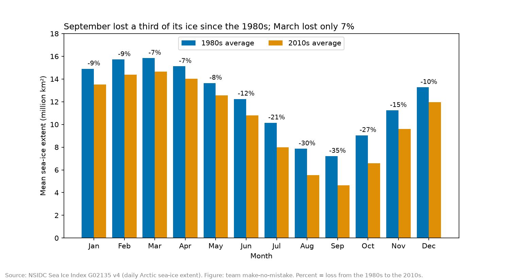

The Shrinking Ice: is the Arctic losing its summer?
IE 421 Data Science for Engineers · Term project · Theme T5 Hot Planet
Team make-no-mistake: Ada Güner Nohut, Canberk Doğruoğlu, Tümer Kaan Mutlu, Yağız Efe
Arctic sea ice grows every winter and shrinks every summer. Satellites have measured this yearly cycle since 1978. Most people know that the ice is shrinking; we ask how the cycle itself is changing, and how closely the summer loss follows temperature and CO2.
1. The ice now spends about three months a year below its old summer low

Between 1979 and 1988, sea ice remained below the 1980s September average for 17 days per year; by 2016–2025, this figure has reached 94 days per year, an increase of more than fivefold.
The threshold used is the average September sea ice extent from the 1980s (7.21 million km²), the level the ice typically shrank to each September in the 1980s. Today, sea ice remains below this level for approximately three months each year. The number of days below this threshold is increasing at a rate of about 21 days per decade. A linear trend fits the data better than a model suggesting a "delayed onset" of the increase; in other words, the increase has been ongoing since the beginning of the satellite record, and by the early 1990s, it had surpassed the range of typical year-to-year fluctuations. Until August 1987, measurements were taken every two days; missing data points were interpolated from adjacent days, a process verified to alter the annual counts by no more than two days.
2. Summer is losing ice much faster than winter

Every month shows less sea ice compared to the 1980s; however, while September has seen a 35% loss, March has experienced a decline of only 7%.
The winter maximum has decreased slightly, while the summer minimum has dropped significantly; the gap between the two is widening, deepening the annual cycle. The most substantial losses occur between July and October (ranging from 21% to 35%). For this reason, the remainder of the project focuses on the summer season: if sea ice continues to decline more rapidly in the summer than in the winter, more of the Arctic Ocean will stay open water for longer each year.
Data
- NSIDC Sea Ice Index (G02135, version 4): daily Arctic sea-ice extent, 1978–today
- NASA GISTEMP v4: monthly temperature anomalies, Northern Hemisphere and global
- NOAA Mauna Loa CO2: monthly mean CO2
Code, data card and exploratory analysis: project repository.